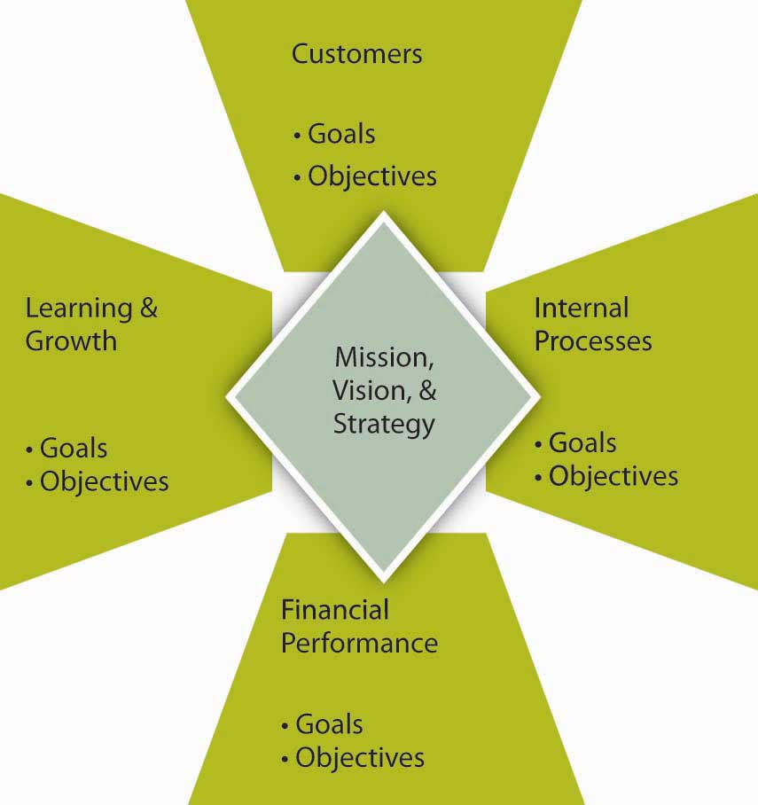
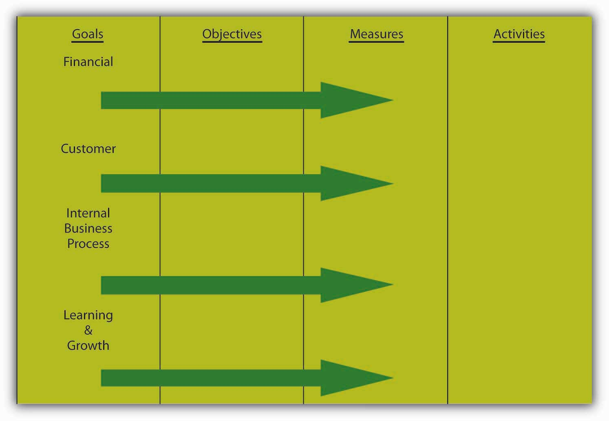

As you might expect, organizations use a variety of measurement approaches—that is, how they go about setting and managing goals and objectives. If you have an understanding of how the use of these approaches has evolved, starting with management by objectives (MBO)A systematic and organized approach that allows management to focus on achievable goals and to attain the best possible results from available resources., you will also have a much better view of how and why the current incarnations, as seen by variations on the Balanced ScorecardA framework designed to translate an organization’s vision and mission statements and overall business strategy into specific, quantifiable goals and objectives and to monitor the organization’s performance in terms of achieving these goals., have many desirable features.
MBO is a systematic and organized approach that allows management to focus on achievable goals and to attain the best possible results from available resources. MBO aims to increase organizational performance by aligning the subordinate objectives throughout the organization with the overall goals that management has set. Ideally, employees get strong input to identify their objectives, time lines for completion, and so on. MBO includes ongoing tracking and feedback in the process to reach objectives.
MBO was first outlined by Peter Drucker in 1954 in The Practice of Management. One of Drucker’s core ideas in MBO was where managers should focus their time and energy. According to Drucker, effective MBO managers focus on the result, not the activity. They delegate tasks by “negotiating a contract of objectives” with their subordinates and by refraining from dictating a detailed road map for implementation. MBO is about setting goals and then breaking these down into more specific objectives or key results. MBO involves (1) setting company-wide goals derived from corporate strategy, (2) determining team- and department-level goals, (3) collaboratively setting individual-level goals that are aligned with corporate strategy, (4) developing an action plan, and (5) periodically reviewing performance and revising goals.Greenwood, R. G. (1981). Management by objectives: As developed by Peter Drucker, assisted by Harold Smiddy. Academy of Management Review, 6, 225–230; Muczyk, J. P., & Reimann, B. C. (1989). MBO as a complement to effective leadership. Academy of Management Executive, 3, 131–138; Reif, W. E., & Bassford, G. (1975). What MBO really is: Results require a complete program. Business Horizons, 16, 23–30. A review of the literature shows that 68 out of the 70 studies conducted on this topic showed performance gains as a result of MBO implementation.Rodgers, R., & Hunter, J. E. (1991). Impact of management by objectives on organizational productivity. Journal of Applied Psychology, 76, 322–336. It also seems that top management commitment to the process is the key to successful implementation of MBO programs.Rodgers, R., Hunter, J. E., & Rogers, D. L. (1993). Influence of top management commitment on management program success. Journal of Applied Psychology, 78, 151–155.
The broader principle behind MBO is to make sure that everybody within the organization has a clear understanding of the organization’s goals, as well as awareness of their own roles and responsibilities in achieving objectives that will help to attain those goals. The complete MBO system aims to get managers and empowered employees acting to implement and achieve their plans, which automatically achieves the organization’s goals.
In MBO systems, goals and objectives are written down for each level of the organization, and individuals are given specific aims and targets. As consultants Robert Heller and Tim Hindle explain, “The principle behind this is to ensure that people know what the organization is trying to achieve, what their part of the organization must do to meet those aims, and how, as individuals, they are expected to help. This presupposes that organization’s programs and methods have been fully considered. If they have not, start by constructing team objectives and ask team members to share in the process.”Heller, R., & Hindle, T. (1998). Essential manager’s manual. London: Dorling Kindersley.
Echoing Drucker’s philosophy, “the one thing an MBO system should provide is focus; most people disobey this rule, try to focus on everything, and end up with no focus at all,” says Andy Grove, who ardently practiced MBO at Intel. This implies that objectives are precise and few in effective MBO systems.
Similarly, for MBO to be effective, individual managers must understand the specific objectives of their job and how those objectives fit in with the overall company goals set by the board of directors. As Drucker wrote, “A manager’s job should be based on a task to be performed in order to attain the company’s goals…the manager should be directed and controlled by the objectives of performance rather than by his boss.”Drucker, P. (1974). Management: Tasks, responsibilities, practices. London: Heinemann. The managers of an organization’s various units, subunits, or departments should know not only the objectives of their unit but should also actively participate in setting these objectives and make responsibility for them. The review mechanism enables the organization’s leaders to measure the performance of the managers who report to them, especially in the key result areas: marketing, innovation, human organization, financial resources, physical resources, productivity, social responsibility, and profit requirements.
In recent years, opinion has moved away from placing managers into a formal, rigid system of objectives. In the 1990s, Drucker decreased the significance of this organization management method when he said, “It’s just another tool. It is not the great cure for management inefficiency.”Drucker, P. (1986). The frontiers of management: Where tomorrow’s decisions are being shaped today. New York: Plume. Recall also that goals and objectives, when managed well, are tied in with compensation and promotion. In 1975, Steve Kerr published his critical management article titled, “On the Folly of Rewarding A, While Hoping for B,” in which he lambasted the rampant disconnect between reward systems and strategy.Kerr, S. (1975). On the folly of rewarding A, while hoping for B. Academy of Management Journal, 18, 769–783. Some of the common management reward follies suggested by Kerr and others are summarized in the following table. His criticism included the objective criteria characteristic of most MBO systems. Kerr went on to lead GE’s human resources function in the mid-1970’s and is credited with turning that massive organization’s recruiting, reward, and retention systems into one of its key sources of competitive advantage.
Table 6.1 Common Management Reward Follies
| We hope for… | But we often reward… |
| Long-term growth; environmental responsibility | Quarterly earnings |
| Teamwork | Individual effort |
| Setting challenging “stretch” goals | Achieving objectives; “making the numbers” |
| Downsizing; rightsizing; restructuring | Adding staffing; adding budget |
| Commitment to quality | Shipping on schedule, even with defects |
| Commitment to customer service | Keeping customers from bothering usThis item was not one of Kerr’s originals but is consistent with the spirit of Kerr’s article. We thank our developmental editor, Elsa Peterson, for this suggestion. |
| Candor; surfacing bad news early | Reporting good news, whether it’s true or not; agreeing with the boss, whether or not she or he is right |
Even though formal MBO programs have been out of favor since the late 1980s and early 1990s, linking employee goals to company-wide goals is a powerful idea that benefits organizations. This is where the Balanced Scorecard and other performance management systems come into play.
Developed by Robert Kaplan and David Norton in 1992, the Balanced Scorecard approach to management has gained popularity worldwide since the 1996 release of their text, The Balanced Scorecard: Translating Strategy into Action. In 2001, the Gartner Group estimated that at least 40% of all Fortune 1000 companies were using Balanced Scorecard; however, it can be complex to implement, so it is likely that the format of its usage varies widely across firms.
The Balanced Scorecard is a framework designed to translate an organization’s mission and vision statements and overall business strategy into specific, quantifiable goals and objectives and to monitor the organization’s performance in terms of achieving these goals. Among other criticisms of MBO, one was that it seemed disconnected from a firm’s strategy, and one of Balanced Scorecard’s innovations is explicit attention to vision and strategy in setting goals and objectives. Stemming from the idea that assessing performance through financial returns only provides information about how well the organization did prior to the assessment, the Balanced Scorecard is a comprehensive approach that analyzes an organization’s overall performance in four ways, so that future performance can be predicted and proper actions taken to create the desired future.
Balanced Scorecard shares several common features. First, as summarized in the following figure, it spells out goals and objectives for the subareas of customers, learning and growth, internal processes, and financial performance. The customer area looks at customer satisfaction and retention. Learning and growth explore the effectiveness of management in terms of measures of employee satisfaction and retention and information system performance. The internal area looks at production and innovation, measuring performance in terms of maximizing profit from current products and following indicators for future productivity. Finally, financial performance, the most traditionally used performance indicator, includes assessments of measures such as operating costs and return-on-investment.
Figure 6.6 The Balanced Scorecard
Source: Adapted from Kaplan, R., & Norton, D. (2001). The Strategy-Focused Organization. Boston: Harvard Business School Press.
On the basis of how the organization’s strategy is mapped out in terms of customer, learning, internal, and financial goals and objectives, specific measures, and the specific activities for achieving those are defined as well. This deeper Balanced Scorecard logic is summarized in the following figure. The method examines goals, objectives, measures, and activities in four areas. When performance measures for areas such as customer relationships, internal processes, and learning and growth are added to the financial metrics, proponents of the Balanced Scorecard argue that the result is not only a broader perspective on the company’s health and activities, it’s also a powerful organizing framework. It is a sophisticated instrument panel for coordinating and fine-tuning a company’s operations and businesses so that all activities are aligned with its strategy.
As a structure, Balanced Scorecard breaks broad goals down successively into objectives, measures, and tactical activities. As an example of how the method might work, an organization might include in its mission or vision statement a goal of maintaining employee satisfaction (for instance, the mission statement might say something like “our employees are our most valuable asset”). This would be a key part of the organization’s mission but would also provide an “internal” target area for that goal in the Balanced Scorecard. Importantly, this goal, when done correctly, would also be linked to the organization’s total strategy where other parts of the scorecard would show how having great employees provides economic, social, and environmental returns. Strategies for achieving that human resources vision might include approaches such as increasing employee-management communication. Tactical activities undertaken to implement the strategy could include, for example, regularly scheduled meetings with employees. Finally, metrics could include quantifications of employee suggestions or employee surveys.
Figure 6.7 Using the Balanced Scorecard to Translate Goals into Activities
Source: Adapted from Kaplan, R., & Norton, D. (2001). The Strategy-Focused Organization. Boston: Harvard Business School Press.
In practice, the Balanced Scorecard is supposed to be more than simply a framework for thinking about goals and objectives, but even in that narrow sense, it is a helpful organizing framework. The Balanced Scorecard’s own inventors “rightly insist that every company needs to dig deep to discover and track the activities that truly affect the frameworks’ broad domains (domains such as ‘financial,’ ‘customer,’ ‘internal business processes,’ and ‘innovation and learning’).”Ittner, C. D., & Larcker, D. (2003, November). Coming up short on nonfinancial performance measurement, Harvard Business Review, pp. 1–8. In its broadest scope, where the scorecard operates much like a map of the firm’s vision, mission, and strategy, the Balanced Scorecard relies on four processes to bind short-term activities to long-term objectives:
You can imagine that it might be difficult for organizations to change quickly from something like MBO to a Balanced Scorecard approach. Indeed, both MBO and the Balanced Scorecard fit in the larger collection of tools called performance management systemsThe process through which companies ensure that employees are working toward organizational goals.. Such systems outline “the process through which companies ensure that employees are working towards organizational goals.”Ghorpade, J., & Chen, M. (1995). Creating quality-driven performance appraisal systems. Academy of Management Executive, 9(1): 23–41.
Performance management begins with a senior manager linking his or her goals and objectives to the strategic goals of the organization. The manager then ensures that direct reports develop their goals in relation to the organization’s overall goals. In a multidivisional or multilocation organization, lower-level managers develop their goals, and thus their departmental goals, to correspond to the organizational goals. Staff members within each department then develop their objectives for the year, in cooperation with their managers. Using this pattern for planning, all activities, goals, and objectives for all employees should be directly related to the overall objectives of the larger organization.
Performance management systems are more than the performance review because reviews typically are the final event in an entire year of activity. At the beginning of the year, the manager and employee discuss the employee’s goals or objectives for the year. This will form the basis for ongoing discussion recorded in a document called the performance plan. The manager assists employees in developing their objectives by helping them to understand how their work relates to the department goals and the overall goals of the organization. The employee and manager also should work together to determine the measurements for evaluating each of the objectives. It is important that both the manager and employee agree what the objectives are and how they are to be measured.
Employees should not be set up with unrealistic expectations, which will only lead to a sense of failure. If additional support or education is required during the year to help employees meet their objectives, those can also be identified and planned for at this time.
The performance plan will contain the section on goals or objectives. It also should include a section that identifies the organization’s expectations of employee competencies. The set of expectations will involve a range of competencies applicable to employees based on their level in the organization. These competencies include expectations of how employees deal with problems, how proactive they are with respect to changing work, and how they interact with internal and external customers. While less complex than the Balanced Scorecard, you can see how the essential components are related. In addition to basic behavioral traits, supervisors and managers are expected to exhibit leadership and, more senior still, provide vision and strategic direction. It is important to ensure that employees understand these competencies in respect to themselves.
Throughout the year, the supervisor must participate actively in coaching and assisting all employees to meet their individual goals and objectives. Should a problem arise—either in the way that success is being measured or in the nature of the objectives set at the beginning of the year—it can be identified well in advance of any review, and adjustments to the goals or support for the employee can be provided. This is referred to as continual assessment.
For example, suppose a staff member predicted that he or she would complete a particular project by a particular date, yet they have encountered problems in receiving vital information from another department. Through active involvement in staff activities, the supervisor is made aware of the situation and understands that the employee is intimidated by the supervisor they must work with in the other department. With coaching, the employee develops a method for initiating contact with the other department and receives the vital information she requires to meet her objective.
The way that goals and objectives are managed in the P-O-L-C process has evolved over time. While organizations can have very simple performance measurement systems, these systems typically track multiple goals and objectives. The management by objectives (MBO) approach is perhaps one of the earliest systematic approaches to working with goals and objectives. The Balanced Scorecard is aimed to make key improvements on a simple MBO system, particularly by more clearly tying goals and objectives to vision, mission, and strategy and branching out beyond purely financial goals and objectives. MBO and the Balanced Scorecard belong to the larger family of systems called performance management systems.